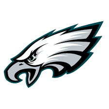
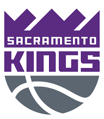

Watching sports has been a hobby of mine ever since I was a child. I remember not watching a lot of sports growing up due to the fact that I loved playing video games. I feel like this is the reason why I didn't watch sports growing up. Nowadays, I don't see how I can go forward in my life if I were not able to watch sports. I love talking about sports, hearing about sports, just being able to share my knowledge. Sports is one of the main reasons as to why I actually went back to school to pursue a degree in Computer Science. One thing that has always been of interest to me is the field of Data Science. There were various ways one could get into Data Science and I believed choosing Computer Science was the best route for me. One day, my dream is to be a Data Scientist for my favorite football or baskeetball team. To me, technology is extremely important and you can use data anywhere and everywhere. Any field can use technology and that includes sports. When you go on gambling websites, they always have a chances of winning percentile and that heavily includes using data. Data is special and with the proper tools, you can do many great things that not many can say they can do. Nonetheless, my favorite sports happen to only be football and basketball.
|  |
I'm a diehard Eagles fan. I've been a fan ever since 2010 and I can talk about this team for HOURS. This is one team where I want to work for and help contribute to success. One day, I want to be able to incorporate my knowledge so that I can actually contribute to drafting on draft night. Seeing my team be able to succeed is something that I want to do. Data is so important in sports including football. The 40-yard dash, vertical, etc. is a great example as to why data matters and why it is important everywhere such as football and sports in general.
|  |
This team has a lot of meaning to be because I was actually born in Sacramento, California. To be honest, I don't watch this team as much as I would love to because I don't agree with some of the things that management is doing. Not much to say about this team, I have been watching the Kings ever since Mike Bibby and Chris Webber were playing. I wish the organization did better things with the team but as of right now, the team is mediocre and it's hard to watch them.